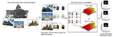

In top venues: TPAMI x 2, TOG x 1, CVPR x 6, ICCV x 2, ECCV x 2.
Complete list: click here, or refer to Google Scholar and DBLP for more updated information.
2017

[CVPR17a]
Radiometric calibration for Internet photo collections
Zhipeng Mo, Boxin Shi, Sai-Kit Yeung, and Yasuyuki Matsushita PDF
[CVPR17b]
Polarimetric multi-view stereo
Zhaopeng Cui, Jinwei Gu, Boxin Shi, Ping Tan, and Jan Kautz PDF
2016
[CVPR16]
A benchmark dataset and evaluation for non-Lambertian and uncalibrated photometric stereo Boxin Shi, Zhe Wu, Zhipeng Mo, Dinglong Duan, Sai-Kit Yeung, and Ping Tan PDFProject website
[TOG16]
Occluded imaging with time of flight sensors
Achuta Kadambi, Vage Taamazyan, Boxin Shi, and Ramesh Raskar PDF
2015
[ICCV15a]
Polarized 3D: High-quality depth sensing with polarization cues
Achuta Kadambi, Vage Taamazyan, Boxin Shi, and Ramesh Raskar PDF
[ICCV15b]
Occluded imaging with time of flight sensors
Achuta Kadambi, Vage Taamazyan, Boxin Shi, and Ramesh Raskar PDFProject website
[OptEng15]
Photometric stereo for general isotropic reflectances by spherical linear interpolation
Si Li and Boxin Shi PDF
[ICCP15]
Unbounded high dynamic range photography using a modulo camera
Hang Zhao, Boxin Shi, Christy Fernandez-Cull, Sai-Kit Yeung, and Ramesh Raskar PDFProject websiteBest paper runner-up
[CHI15]
SpecTrans: Versatile material classification for interaction with textureless, specular and transparent surfaces
Munehiko Sato, Shigeo Yoshida, Alex Olwal, Boxin Shi, Atsushi Hiyama, Tomohiro Tanikawa, Michitaka Hirose,
and Ramesh Raskar
PDFProject website
2014
[SciRep14]
Active printed materials for complex self-evolving deformations
Dan Raviv, Wei Zhao, Carrie McKnelly, Athina Papadopoulou, Achuta Kadambi, Boxin Shi, Shai Hirsch, Daniel Dikovsky, Mike Zyracki, Carlos Olguin, Ramesh Raskar, and Skylar Tibbits
PDFProject website
[3DV14]
Photometric stereo using Internet images Boxin Shi, Kenji Inose, Yasuyuki Matsushita, Ping Tan, Sai-Kit Yeung, and Katsushi Ikeuchi PDFProject website
[ECCV14]
Sub-pixel layout for super-resolution with images in the octic group Boxin Shi, Hang Zhao, Moshe Ben-Ezra, Sai-Kit Yeung, Christy Fernandez-Cull, R. Hamilton Shepard, Christopher Barsi, and Ramesh Raskar
PDF
[TPAMI14]
Bi-polynomial modeling of low-frequency reflectances Boxin Shi, Ping Tan, Yasuyuki Matsushita, and Katsushi Ikeuchi PDF
Before 2013
[TPAMI13]
Radiometric calibration by rank minimization
Joon-Young Lee, Yasuyuki Matsushita, Boxin Shi, In-So Kweon, and Katsushi Ikeuchi PDF
[ECCV12]
Elevation angle from reflectance monotonicity: Photometric stereo for general isotropic reflectances Boxin Shi, Ping Tan, Yasuyuki Matsushita, and Katsushi Ikeuchi PDF
[CVPR12]
A biquadratic reflectance model for radiometric image analysis Boxin Shi, Ping Tan, Yasuyuki Matsushita, and Katsushi Ikeuchi PDF
[CVPR11]
Radiometric calibration by transform invariant low-rank structure
Joon-Young Lee, Boxin Shi, Yasuyuki Matsushita, In-So Kweon, and Katsushi Ikeuchi PDF
[ACCV10]
Robust photometric stereo via low-rank matrix completion and recovery
Lun Wu, Arvind Ganesh, Boxin Shi, Yasuyuki Matsushita, Yongtian Wang, and Yi Ma PDF
[CVPR10]
Self-calibrating photometric stereo Boxin Shi, Yasuyuki Matsushita, Yichen Wei, Chao Xu, and Ping Tan PDF